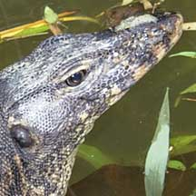
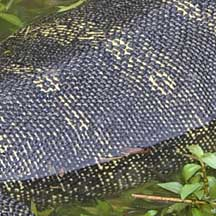
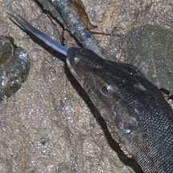
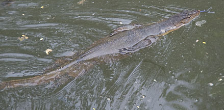
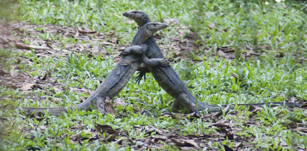
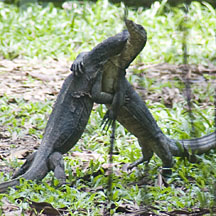
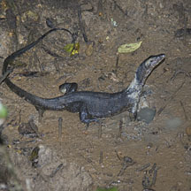
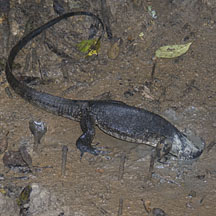
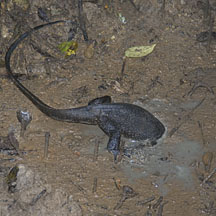

|
|
| vertebrates text index | photo index |
| Phylum Chordata > Subphylum Vertebrata > Class Reptilia |
| Malayan
water monitor Varanus salvator Family Varanidae updated Apr 2018 Where seen? This large lizard is commonly seen on many of our shores, including our offshore islands. According to Baker, they are found in forests, mangroves, scrubland and beaches where they tend to stay close to water. As well as in large canals in built up areas. Although mainly terrestrial, it can climb trees and also swims well (keeping its limbs to the side of the body, and propelling itself with sinuous undulations of the flattened tail). It can even dive underwater. Features: 2.5-3m long. Among the largest lizards in the world, certainly the largest reptile in our marine habitats. A robust, muscular body with a long tail that is flattened towards the slender tip. It has a slender forked tongue. The nostrils are located close to the tip of the long and slender snout. It has small non-overlapping scales on a thick leathery skin. Hatchlings are black with whitish undersides with rows of bright yellow spots forming bands along the back and tail. This pattern fades in adults which is often plain grey. Non-venomous and shy of humans, it will prefer to flee than to fight. But if cornered, it may bite. So do leave the monitors alone. Sometimes mistaken for an Estuarine crocodile. The lizard's snout is short and narrow, and tail is long and slender. A crocodile has a long snout and a much thicker fatter tail. The lizard often swims by placing its limbs against its body and undulating its long tail from side to side. The crocodile may swim in the same way as the lizard. It may also often sink into the murky water and emerge some distance away. Sometimes, all that sticks out above water are the crocodile's eyes and the tip of its long snout. On land, a large monitor lizard can look scary and be mistaken for a crocodile! Once again, observe that the lizard has a short snout and slender tail. And the lizard has a long blue forked tongue which it regularly flicks out now and then. The crocodile doesn't have such a tongue. A crocodile on the other hand, has a long snout and jaws full of teeth! And a thick fat tail. Its scales are also much bigger. What does it eat? According to Baker, it eats small animals and fishes and also scavenges on dead animals. According to Cox, it prefers crabs and frogs and also eats eggs, nestling birds and other reptiles and large invertebrates. Young monitor lizards feed on insects. It hunts during the day. Monitor babies: Mama lizard lays 15-30 eggs with a soft leathery shell. When you see a pair of water monitors hugging one another, they are not mating! They are actually a pair of males wrestling one another. The one that pushes the other onto the ground wins. |
 Nostrils at the tip of a slender snout. |
 Small non-overlapping scales. Bands of yellow spots on juveniles that fade in adults. Sungei Buloh Wetland Reserve, Sep 09 |
 Long blue forked tongue! Pasir Ris Park, Feb 12 |
|
 To swim, it holds its limbs against its body and propels itself with its tail. Admiralty Park, May 12 |
||
|
 Rival males wrestling. Pasir Ris Park, Mar 13 |
 The aim is to topple your rival onto the ground. |
|
|
 Pasir Ris Park, Feb 12 |
 Digging deep in a muddy hole. |
 The lizard can hold its breath for a long time! |
| Malayan water monitors on Singapore shores |
On wildsingapore
flickr
|
|
Links
Articles
References
|